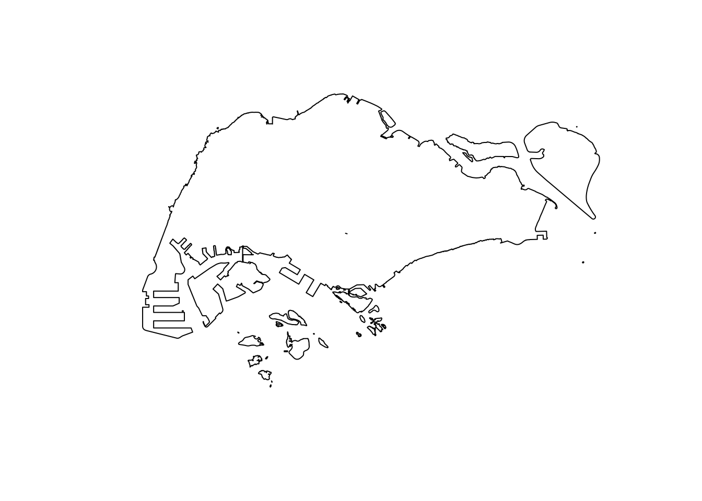

pacman::p_load(sf, spatstat, raster, maptools, tmap, tidyverse)In-class Ex 2
Overview
In this in-class exercise, we will address common challenges encountered when working with geospatial data or using R’s geospatial packages.
1. Missing Longitude and Latitude Data
The Thailand Road Traffic Accident dataset includes the longitude and latitude locations of accidents. Before converting this data to an sf object, it’s essential to ensure that there are no missing or unexpected values (e.g., “NA”) in the longitude and latitude columns. Failing to address these can cause errors during conversion.
Additionally, it’s important to check that missing data does not exceed 5% of the total dataset, as this could compromise the dataset’s usability.
The code below filters out missing or “NA” values in the longitude and latitude columns.
rdacc_sf <- read_csv("data/aspatial/thai_road_accident_2019_2022.csv") %>%
filter(!is.na(longitude) & longitude != "",
!is.na(latitude) & latitude != "") %>%
st_as_sf(coords = c(
"longitude", "latitude"),
crs = 4326) %>%
st_transform(crs = 32647)Rows: 81735 Columns: 18
── Column specification ────────────────────────────────────────────────────────
Delimiter: ","
chr (10): province_th, province_en, agency, route, vehicle_type, presumed_c...
dbl (6): acc_code, number_of_vehicles_involved, number_of_fatalities, numb...
dttm (2): incident_datetime, report_datetime
ℹ Use `spec()` to retrieve the full column specification for this data.
ℹ Specify the column types or set `show_col_types = FALSE` to quiet this message.Now that we have removed all missing or “NA” values in the longitude and latitude columns, the point geometry has been successfully created.
glimpse(rdacc_sf)Rows: 81,376
Columns: 17
$ acc_code <dbl> 571905, 3790870, 599075, 571924, 599523, 5…
$ incident_datetime <dttm> 2019-01-01 00:00:00, 2019-01-01 00:03:00,…
$ report_datetime <dttm> 2019-01-02 06:11:00, 2020-02-20 13:48:00,…
$ province_th <chr> "ลพบุรี", "อุบลราชธานี", "ประจวบคีรีขันธ์", "เชียงใ…
$ province_en <chr> "Loburi", "Ubon Ratchathani", "Prachuap Kh…
$ agency <chr> "department of rural roads", "department o…
$ route <chr> "แยกทางหลวงหมายเลข 21 (กม.ที่ 31+000) - บ้านวั…
$ vehicle_type <chr> "motorcycle", "private/passenger car", "mo…
$ presumed_cause <chr> "driving under the influence of alcohol", …
$ accident_type <chr> "other", "rollover/fallen on straight road…
$ number_of_vehicles_involved <dbl> 1, 1, 2, 1, 1, 1, 2, 2, 2, 2, 1, 1, 1, 1, …
$ number_of_fatalities <dbl> 0, 0, 1, 0, 0, 0, 0, 1, 3, 0, 0, 1, 0, 0, …
$ number_of_injuries <dbl> 2, 2, 0, 1, 0, 2, 2, 0, 0, 1, 1, 0, 1, 1, …
$ weather_condition <chr> "clear", "clear", "clear", "clear", "clear…
$ road_description <chr> "straight road", "straight road", "wide cu…
$ slope_description <chr> "no slope", "no slope", "slope area", "no …
$ geometry <POINT [m]> POINT (701480.8 1654653), POINT (113…2. Converting KDE Outputs to Gridded Kernal Density Objects
2.1 Retired maptools
The as.SpatialGridDataFrame.im() function from the maptools package is used to convert KDE outputs into gridded kernel density objects. However, maptools has been retired, and its binary has been removed from CRAN, making it unavailable for installation through conventional methods. You can still download it from Posit Public Package Manager snapshots using the code chunk below.
install.packages("maptools", repos = "https://packagemanager.posit.co/cran/2023-10-13")Here’s the gridded kernel density object using the as.SpatialGridDataFrame.im() function from the maptools package
gridded_kde_childcareSG_bw <- maptools::as.SpatialGridDataFrame.im(kde_childcareSG.bw)
spplot(gridded_kde_childcareSG_bw)
2.2 spatstat.geom alternative to as.SpatialGridDataFrame.im()
If you prefer not to use the retired maptools package, you can use spatstat.geom as an alternative to convert KDE outputs into gridded kernel density objects. The output will be the same.
gridded_kde_childcareSG_bw_spatstat <- as(kde_childcareSG.bw, "SpatialGridDataFrame")
spplot(gridded_kde_childcareSG_bw_spatstat)
3. Dissolving Boundaries
sf also supports GIS functions. For example, you have the Singapore map at the planning subzone level, but you want to dissolve all internal boundaries to a single outline map of Singapore. You could do so using st_union().
I have two maps here: one being the planning subzone, the other the coastal outline.
plot(mpsz_sf$geometry)
plot(sg_sf$geometry)As you can see, all administrative boundaries disappear when we use st_union to combine the maps.
sg_sf <- mpsz_sf %>%
st_union()
plot(sg_sf)
4. Ensuring Reproducibility when Using Monte Carlo Simulation
Monte Carlo simulation is often used in geospatial analysis (e.g. generating the CSR envelop for G-, F-, K- and L- functions in point pattern analysis). To ensure reproducibility of results, it is important to set seed before using any functions involving Monte Carlo simulations.
set.seed(2024)5. Jittering Approach for Points at the Same Location
When multiple points share the same location (e.g., childcare centers within the same shopping center), you need to apply jittering before analysis. Ensure that the nsim argument in rjitter() is set to a value greater than 1, such as 50.
childcare_ppp_jit <- rjitter(childcare_ppp,
retry=TRUE,
nsim=50,
drop=TRUE)